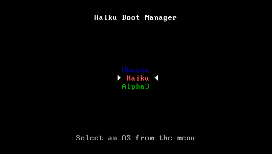
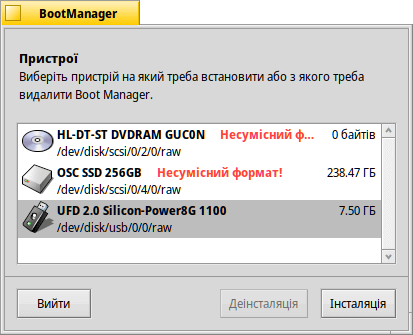
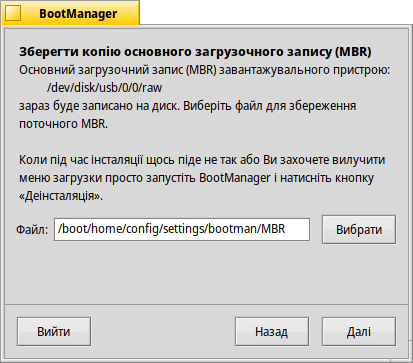
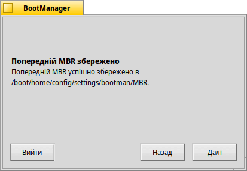
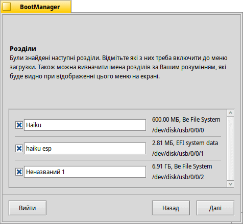
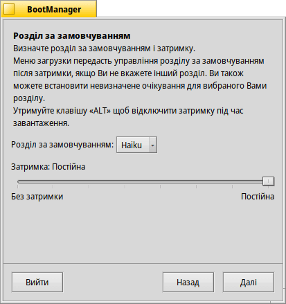
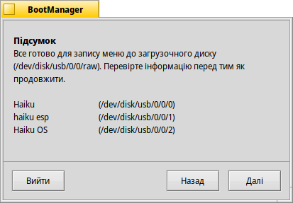
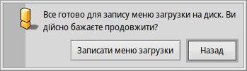

BootManager (Менеджер загрузки)
BootManager (Менеджер загрузки)
| Deskbar: | У меню не входить, звичайно запускається з меню Інсталятора | |
| Розташування: | /boot/system/apps/BootManager | |
| Налаштування: | відсутні Попередній запис MBR за замовчуванням зберігається в ~/config/settings/bootman/ |
Якщо Ви не додаєте розділ Haiku до вже встановленого менеджера загрузки, такого як GRUB, або взагалі не використовуєте подібні менеджери, BootManager встановить невелике меню загрузки до основного загрузочного запису (MBR), яке виглядає приблизно так:
Менеджер загрузки детально висвітлює процес встановлення меню загрузки.
 Вибір цільового диска
Вибір цільового диска

Після запуску, BootManager виводить список всіх доступних пристроїв, серед яких треба вибрати потрібний. Якщо на цьому диску меню загрузки вже встановлене, кнопка стає активною і дозволяє відновити MBR з резервної копії, видаляючи меню загрузки.
Якщо Вам треба встановити меню загрузки, натисніть кнопку для продовження.
Резервне копіювання основного загрузочного запису (MBR)
На випадок, якщо що-небудь піде не так, або Ви бажатимете видалити меню загрузки, робиться резервна копія Master Boot Record (MBR). Безумовно, це дуже важливий крок, переконайтеся, що Ви часом не перезаписуєте будь-яку іншу резервну копію MBR, яка залишилась від попередніх експериментів!
 Просто вкажіть шлях де буде збережено файл резервної копії «MBR» або залиште стандартний. Після натискання кнопки , Ви отримаєте підтвердження успішного створення резервної копії.
Конфігурація меню загрузки


Далі ви побачите список усіх розділів на цільовому диску. Встановлюючи позначки у чекбоксах, Ви визначаєте, які пункти з'являтимуться у меню загрузки, текстові поля дозволяють перейменувати пункти.
Після цього, у спливаючому меню Ви вибираєте розділ для загрузки за замовчуванням та повзунком встановлюєте час, протягом якого меню буде залишатись на екрані. Позиція повзунка «Без затримки» дозволить повністю пропустити меню загрузки а позиція «Постійна» зупинить загрузку системи доки користувач не вибере один з пунктів меню. Ви можете відключити затримку, тримаючи натиснутою клавішу ALT під час загрузки.
Запис меню загрузки


Перед тим, як меню загрузки буде записано в MBR, Ви отримаєте підсумок конфігурації а потім останню можливість перервати операцію. Не хвилюйтеся, до тих пір поки Ви зберігаєте резервну копію MBR, Ви можете легко скасувати зміни. Якщо станеться щось суттєве, Ви завжди можете загрузитися з інсталяційного компакт-диска Haiku або USB-накопичувача та відновити MBR за допомогою BootManager і резервної копії.